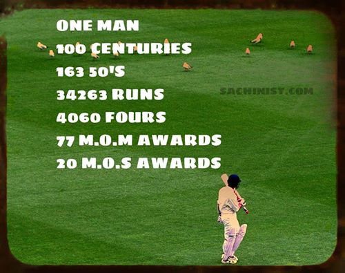

HE HAS PLAYED 663 MATCHES IN ALL...
TEST CAREER
HE MADE THE MOST RUNS IN TEST THAT IS 15,921 RUNS & HAS A ASHTONING CAREER AVERAGE OF 53.78..
 HE BECAME THE FIRST INDIAN TO SURPASS THE 11,000 TEST RUN MARK AND THE THIRD INTENATIONAL PLAYER
HE BECAME THE FIRST INDIAN TO SURPASS THE 11,000 TEST RUN MARK AND THE THIRD INTENATIONAL PLAYER
HE IS THE SECOND INDIAN AFTER SUNIL GAVASKAR TO MAKEOVER 10,000 RUNS IN TEST MATCHES..
TENDULKAR AND BRIAN LARA ARE THE FASTEST TO SCORE 10,000 RUNS IN TEST CRICKET HISTORY..BOTH OF THEM ACHIEVED THIS IN 195 INNINGS..

ONEDAY CAREER
HE HAS PLAYED 263 ODIs..
HE HAS CONSECUTIVELY APPEARED IN 185 MATCHES...!!!
HE HAS THE MOST STADIUM APPEARENCE
HE HAS THE MOST INNINGS APPEARENCE THAT IS 452 & WAS THE FIRST TO APPEAR IN 400 INNINGS IN ODI MATCHES....
HE IS THE FIRST BATSMAN TO SCORE A 200 IN ONE ODI INNINGS..
SACHIN HAS SCORED 18426 RUNS IN 452 INNINGS OF ODI CRICKET AT AN ASTONISHING AVERAGE OF 44.83 AND BLISTERING STRIKE RATE OF 86.24.HE IS THE LEADING RUN SCORER IN THE ODI FORMAT OF THE GAME AND THE ONLY PLAYER EVER TO CROSS THE 14,000-15,000-16,000-17,000 AND 18,000 RUN MARKS....
SACHIN TENDULKAR HAS THE RECORD FOR SCORING 1,000 ODI RUNS IN A CALENDAR YEAR....
HE HAS DONE IT SEVEN TIMES - 1994, 1996, 1997, 1998, 2000, 2003 AND 2007
TENDULKAR HAS SCORED OVER 1000 ODI RUNS AGAINST ALL MAJOR CRICKETING NATIONS.....
